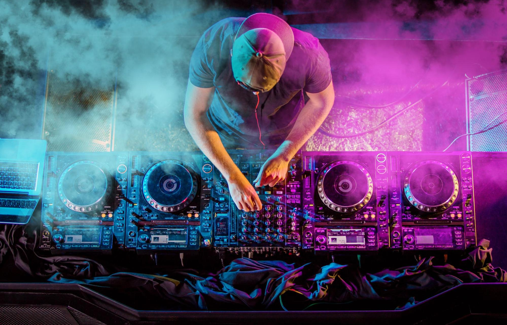
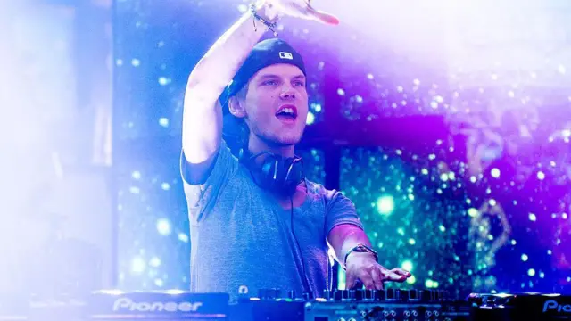

Bem-vindo ao Fã-Clube
Melhores DJs do Mundo
Porque a música conecta o mundo

Nosso fã-clube conecta amantes da música eletrônica de todos os cantos, celebrando a arte e a energia dos DJs mais renomados.
🌍Conheça Alguns dos Maiores DJs do Mundo
Explore os perfis dos DJs mais influentes da cena eletrônica global, suas carreiras, estilos musicais e contribuições para a música eletrônica.
David Guetta
Francês, pioneiro do EDM, autor de hits como "Titanium" e "Play Hard".
Tiësto
Holandês, ícone do trance e house, conhecido por "Adagio for Strings".
Armin van Buuren
Holandês, referência em trance, apresentador do programa “A State of Trance”.
Calvin Harris
Escocês, produtor de EDM e pop, conhecido por "Summer" e "Feel So Close".
Zedd
Russo-alemão, produtor de EDM e pop, autor de "Clarity" e "Stay".

avicii
Sueco, pioneiro do EDM, conhecido por "Wake Me Up" e "Levels". Uma pequena Homenagem ao legado de Avicii na cena eletrônica.Seu LEGADO é ETERNO.
Alok
Brasileiro, destaque do EDM, autor de "Hear Me Now" e "Never Let Me Go".
Martin Garrix
Holandês, prodígio do EDM, conhecido por "Animals" e "Scared to Be Lonely".